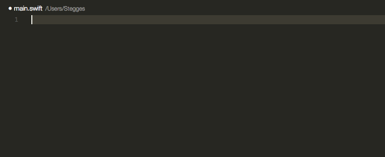

I moved from Emacs to VSCode for almost one year and I’m happy about my productivity.
Most of the time, I’m editing Markdown.
Let me share these 5 extensions which are useful for boosting your productivity on Markdown.
Markdown All in One
Markdown All in One is a must one for editing Markdown. It contains Markdown preview,
keyboard shortcuts, auto preview, and more.
The shortcuts will make editing Markdown much easy:
The completion also contains path finding:
We can print Markdown to HTML with the command: Markdown: Print current document to HTML.
Furthermore, it comes with a beautiful Math support:
Dictionary Completion
Dictionary Completion is another extension to help you input English words quicker. Because I’m not a native English speaker, this helps me to write words correctly:
Markdown does not support quick suggestions in default, we need to add the below snippet to make hints appear when type in a Markdown file:
|
Paste Image
I’d love to insert more screenshots to my Markdown files. Paste Image helps me save my images from xclip. This extension supports Mac/Windows/Linux.
PlantUML
PlantUML is an awesome extension if you need to draw diagrams.
In PlantUML, diagrams are defined using a simple and intuitive language. When you editing the source files of the diagrams, you can also preview the result:
PlantUML supports all kinds of diagrams used by developers, such as sequence diagrams, object and class diagrams, etc.
If you already familiar with Draw.io, you will like another extension Draw.io Integration.
Markdown Emoji
We need more smiles!
Markdown Emoji does one simple thing: add some Emoji faces in your document.

But I found a defect for this extension, my Hexo rendered result does not show Emoji correct in HTML. There is another similar extension Emoji solves this issue. And you can even add Emoji in code:

That all, happy editing Markdown!
Join my Email List for more insights, It's Free!😋